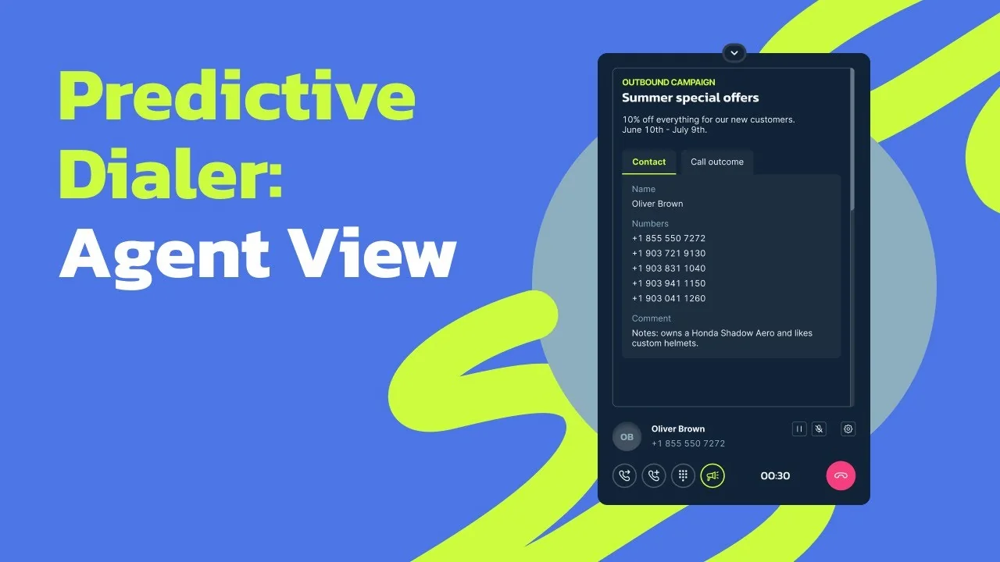

Predictive dialer
How we cut agent idle time and nearly doubled talk time, from 24 to 47 minutes an hour

Talk time per hour
47min
up from 24 min. That’s 78% of working time, within the 70–90% norm
Wait for next call
≤40sec
how long an agent waits for the next conversation
Abandoned calls
1–3%
of connected calls, with a recommended limit of 3%
Hold time
≤3sec
from the contact answering to being connected to an agent
Context and problem
Calling one contact at a time couldn’t keep up as customers grew
MightyCall is a cloud phone system for businesses. Outbound campaigns let them call through long lists of contacts for sales, reminders, or surveys.
Campaigns had two modes. In preview mode, a call with the contact’s details pops up in the agent’s webphone. The system dials only after the agent accepts it. In progressive mode, the system dials the next number as soon as the agent is free.
Both modes call one contact at a time. People pick up 20–25% of calls on average, and the agent waits while the system tries to reach someone. Small teams could live with that. But as contact lists and teams grew, users started asking how to make campaigns faster.
Volume. Teams couldn’t get through their calls in time, and campaigns cost more.
Pauses between calls. In preview mode, agents accepted every call by hand. In progressive mode, they still sat waiting for someone to answer.
Goal. Remove manual work and waiting between calls so agents spend more time talking.
Research
Agents spent less than half their working time talking
I joined at the research stage, when the customer interviews were already done. I looked at the problem from three angles.
- Statistics. Average agent occupancy was about 40%, or roughly 24 minutes of talking per hour. The rest went to switching between calls and waiting for contacts to pick up.
- The research team’s report. The company’s researchers interviewed customers with 20 or more agents. They complained most about idle time, mistakes in manual dialing, overload at peak hours, and a dialing pace that was hard to control.
- Competitors. Most competitors dial at a fixed pace, no matter how busy the agents are. Below 70% occupancy, agents sit idle, and above 90%, they get overloaded and burn out (research on agent occupancy).
-
Call flow should adapt to agents
Agents either sit idle or can’t keep up with the queue.
-
Pace should be configurable
Customers want to set dialing speed, timeouts, and post-call pauses for each campaign.
-
Customers need analytics
They want to see how many calls went out and spot problems, so they can fix the campaign quickly.
Idea
The system dials ahead while the agent is still on a call
Hypothesis
If the system tracks the team’s workload and adjusts the call flow, agents will stop sitting idle between calls
This led to a third mode, predictive, built for large call centers with many agents and heavy calling. Preview and progressive wait for a free agent and then call one contact. Predictive dials ahead, several contacts per agent at once, and connects agents only to the people who answer. How many calls it places depends on how often people on the list pick up, what kind of numbers they are, and the time of day.
To keep up the pace without overloading agents, the algorithm watches average talk time, idle and wrap-up time, how busy agents are, the list’s contact rate, and the abandon rate.
A campaign starts slow. At first it works like progressive mode, one contact per agent, and collects statistics. Then it speeds up. If the abandon rate goes over the limit, it slows down again. Small teams are better off with progressive mode, since the forecast needs enough agents to be accurate.
What I designed
Teams pick a mode by their size
I started with campaign setup in the wizard. Then I moved on to the agent workspace, where agents take calls, see contact details, and log the outcome.
Hints for choosing a mode. The three dialing modes are easy to mix up. Predictive mode also does poorly in a small team, where it ends up calling one contact per agent. In the wizard, each mode is a card with a short hint on who it’s for. Preview is for small teams, progressive for small and mid-size ones, and predictive for large ones. Nobody has to understand the algorithm to choose. If a predictive campaign gets fewer than 5 agents on the next step, the wizard suggests adding more.
Once a mode is picked, its settings fill in automatically. Users can still change the dialing pace, pauses between calls, and the allowed abandon rate by hand.
Contact details at the moment of the call. In predictive mode, the agent doesn’t choose whom to call and gets no time to prepare. The contact is already on the line and waits 3 seconds at most. That’s why the call arrives in the webphone together with the campaign name and description and the contact’s name and details. In a couple of seconds, the agent knows who’s on the line and why, without digging through other tabs.
Call outcome during wrap-up. The next call is ready almost as soon as a conversation ends, but the agent still has to log the outcome. The webphone opens the outcome list right after the call, with a wrap-up timer running. This keeps the pause short and predictable, and the algorithm factors it in when it sets the pace.
01 / 03
Analytics. It didn’t need its own screen. Campaign calls show up in the existing Reports section, and the Campaigns report includes the abandon rate.
Result
Agents’ talk time nearly doubled
We first ran the mode as a test on live campaigns. We checked whether agents were comfortable with the new pace, whether the settings made sense, and how many calls were abandoned.
Before
24min
talk time per hour, 40% occupancy
After
47min
talk time per hour, 78% occupancy, within the 70–90% norm
Agents now spend most of their working time talking instead of clicking between calls. In bulk dialing, the next call reaches an agent within 40 seconds, and the abandon rate stays at a normal 1–3%.
After launch, the number of outbound campaigns grew. MightyCall can now offer outbound campaigns to large teams, just like competing services do. We’re still tracking how the mode performs and collecting customer feedback.